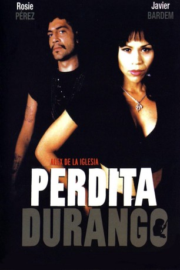
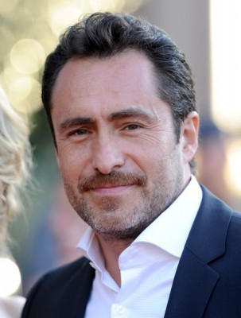

#3866 Perdita Durango
Alternativ: Dance with the Devil (Originaltitel)
 
 IMDB-Wertung: 6.3 / 10
IMDB-Wertung: 6.3 / 10  Tomatometer: 33
Tomatometer: 33  Metascore: 0
Metascore: 0 
Ein Paar wie Nitro und Glyzerin: die Hure Perdita und Romeo Dolores, der Bankräuber, Drogenkurier und Voodoopriester. Es knallt, als sie sich an der mexikanisch-texanischen Grenze kennenlernen. Gewalt bestimmt auch weiterhin ihr Leben und ihre Liebe. Aus einer Laune heraus kidnappen Perdita und Romeo ein Teenager-Pärchen, treiben mit ihm bizarre Sexspiele und nehmen sie mit nach Las Vegas, wo sie dem Gangsterboß Santos eine brandheiße Ladung abliefern müssen. Und den Weg dahin pflastern natürlich Leichen.
Jahr: 1997
Dauer: 130 Minuten
FSK: 18
Land: Mexiko Studio: AdvancedTonspuren:
Untertitel: Deutsch,
Auflösung: 1080p (1920x824) Größe: 7884 MB
Genre: Action, Horror, Krimi, Liebe
Regisseur: Álex de la Iglesia
Drehbuch: Jon Watts
Soundtrack:
Darsteller:
 Rosie Perez als Perdita Durango
Rosie Perez als Perdita Durango Javier Bardem als Romeo
Javier Bardem als Romeo- Aimee Graham als Estelle
 James Gandolfini als Dumas
James Gandolfini als Dumas-  Demián Bichir als Catalina
 Carlos Bardem als Reggie
Carlos Bardem als Reggie Santiago Segura als Shorty Dee
Santiago Segura als Shorty Dee Don Stroud als Santos
Don Stroud als Santos- David Villalpando als Skinny
- Marco Bacuzzi als Tony
- Katie Barberi als Stewardess
- Craig Vincent als Policeman #2
- Harley Cross als Duane
- Screamin' Jay Hawkins als Adolfo
- Harry Porter als Ford
- Carlos Arau als Phillips
- Alex Cox als Doyle
- Miguel Galván als Doug
- Regina Orozco als Lilly
 Roger Cudney als Herbert
Roger Cudney als Herbert- Erika Carlsson als Glory Ann
- William G. Stamper als Charly Park
- Gabriel Berthier als Technician
- César Rodríguez als Dedo Peralta
- Forrie J. Smith als Armendariz
- Paco Pharrez als Nicky Bigfoot
- Will 'Nahkohe' Strickland als Provinio Momo 'The Fist'
- Josefina Echánove als Romeo's Grandmother
- Miguel Iglesias als Danny Mestiza
- Dewey Kellogg als Montana
- Abel Woolrich als Old Man in Cementery
- James Gooden als Manny Flynn
- Emily Blanton als Airport Waitress
- Maya Zapata als Mexican Girl #1
- Vadira Zapata als Mexican Girl #2
- Andaluz Russell als Juana
- Salvador Gómez als Mexican Border Guard
- Kenny Jacobs als Driver
- Pam Risner als Woman
- Cheli Godínez als Vicky
- Norman Stone als Old Man 'Toques'
- Gerardo Zepeda als La Florida Barman
- Lazaro Paterson als Babalawo Priest
- Jessie Faller als Bank Teller
- Adelina Sinohui als Beautiful Woman
 Roberto Lopez als Susie Street Man
Roberto Lopez als Susie Street Man- Paul Dapra als Policeman #1
- Steve Kennedy als Paramedic
- Benjamin Joel Caron als Concerned Citizen , uncredited
- Marco López als Extra in Las Vegas , uncredited
Datei: X:\FSK18-1900-1999\Perdita Durango (1997, FSK18, 1920x824).mkv seit 23.06.2016
Festplatte: FSK18
 Es gibt insgesamt 108 Filme in der Gruppe 'FSK18-1900-1999'
Es gibt insgesamt 108 Filme in der Gruppe 'FSK18-1900-1999'